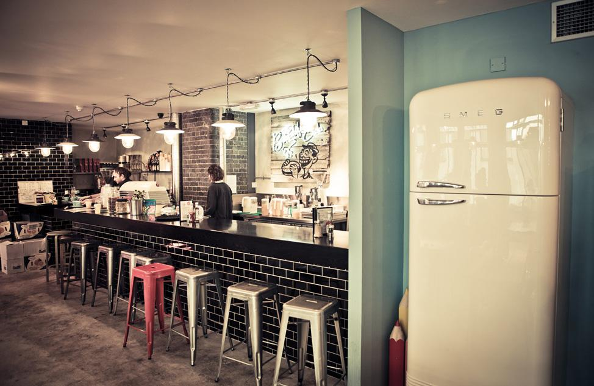

Price: ££
Info: Make your way through the secret fridge doorway and into the basement bar, which includes
drinking classics, great snacks and a bunch of cocktails - this is sure to be a lucky treat. To get
inside, say the code: “Mayor of Scaredy Cat Town”!

Price: ££
Info: If social fun and games is your vibe, then Rooftop East is the place to be. It serves street
food and house punches - perfect for a chilled date. What’s more, you can battle in crazy gold, have
a whack at baseball or play some classic bowls.

Price: £££
Info: This foodie wonderland is one of the oldest food markets in London and a perfect date spot,
full of culture, heritage and great food options. If you’re a food enthusiast and want to share
your passion, Borough Market is the ideal space. This bright, high-spirited dining destination
highlights British produce, where you can indulge in fine cheeses, up-market sandwiches and
delightful roasts. If the crowds are overwhelming, grab some small bites to eat from Neal’s
Yard Dairy or Bread Ahead and head down to the bankside for a scrumptious riverside picnic.

Price: £££
Info: This foodie wonderland is one of the oldest food markets in London and a perfect
date spot, full of culture, heritage and great food options. If you’re a food enthusiast
and want to share your passion, Borough Market is the ideal space. This bright, high-spirited
dining destination highlights British produce, where you can indulge in fine cheeses, up-market
sandwiches and delightful roasts. If the crowds are overwhelming, grab some small bites to eat
from Neal’s Yard Dairy or Bread Ahead and head down to the bankside for a scrumptious riverside picnic.